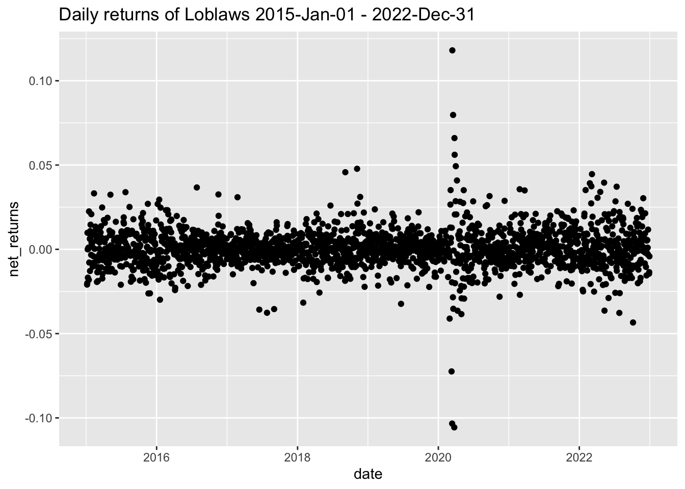
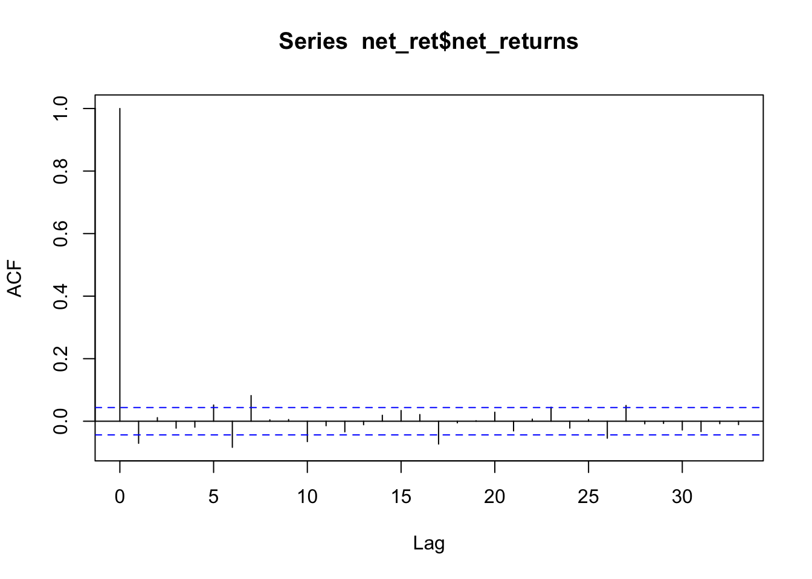
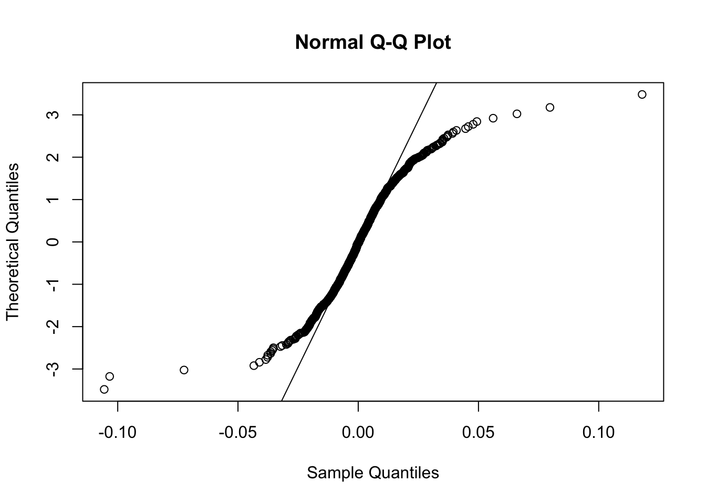
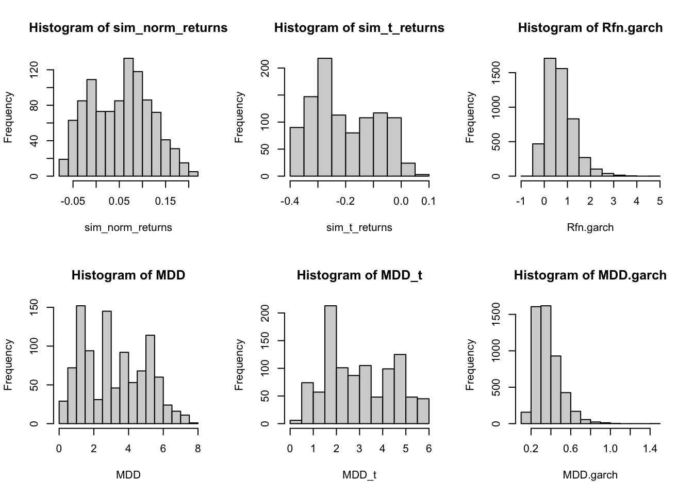
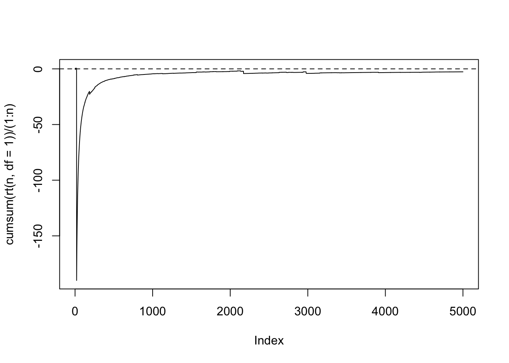
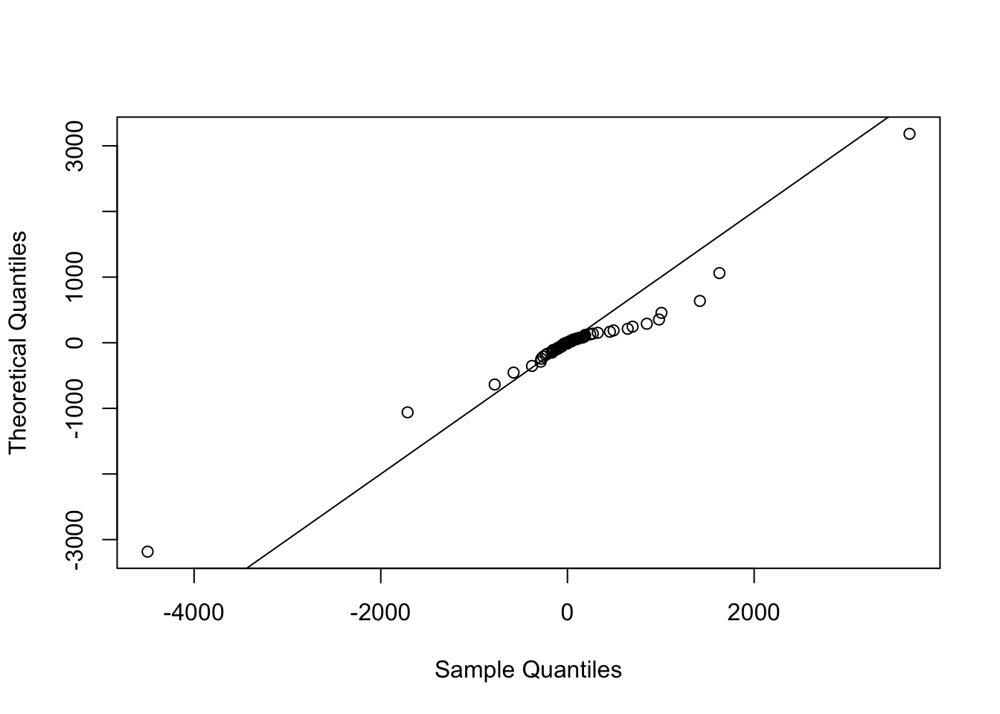
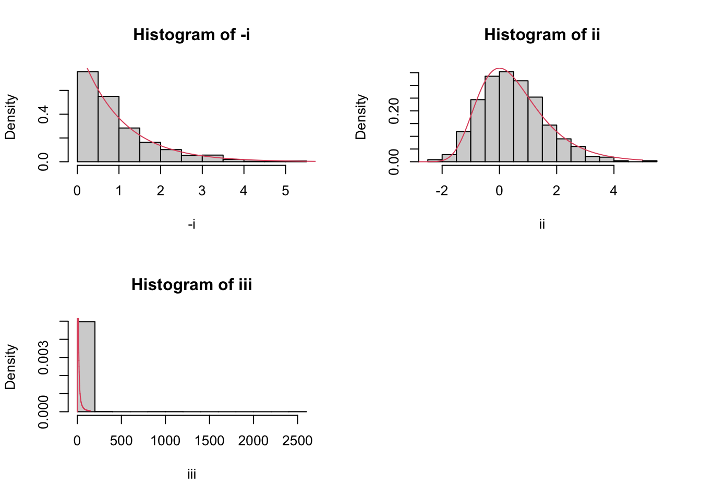
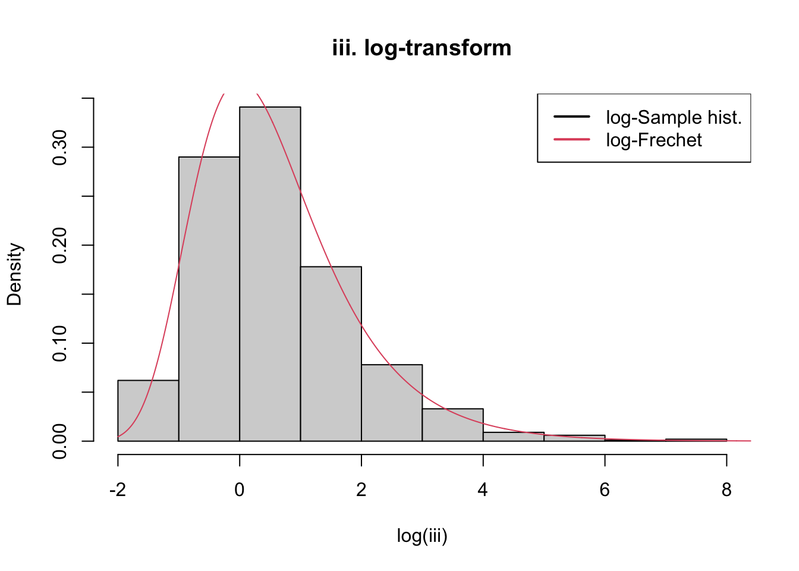

Chapter 12 Problem Set 2
12.1 Q1
An MLE can be derived from finding the derivative of the log \(L(\alpha)\), \(l(\alpha)\) function, where
\[
\begin{aligned}
L(\alpha) &= \prod^{n}_{i=1} \left[ \frac{\alpha x_{i}^{-(\alpha+1)}}{\ell^{-\alpha}} \right]\\
\log L(\alpha) = l(\alpha) &= \sum^{n}_{i=1} \left[ \log(\alpha) - (\alpha+1)\log(x_{i}) +\alpha\log(\ell) \right]\\
\\
l^{'}(\alpha) &= \sum^{n}_{i=1} \left( \frac{1}{\alpha} - [\log (x_{i}) + \log(\ell)]\right) = 0\\
0 &= \frac{n}{\alpha} - \sum^{n}_{i=1} \left( \log(x_{i}) -\log(\ell) \right)\\
\frac{n}{\alpha} &= \sum^{n}_{i=1} \left( \log(x_{i}) -\log(\ell) \right)\\
\frac{1}{\alpha} &= \frac{1}{n} \left[ \sum^{n}_{i=1}\log\left( \frac{x_{i}}{\ell} \right) \right]\\
\\
\therefore \hat{\alpha} &= \left( \frac{1}{n} \left[ \sum^{n}_{i=1}\log\left( \frac{x_{i}}{\ell} \right) \right] \right)^{-1}
\end{aligned}
\]
12.2 Q2
12.2.1 Part A
Heavy tail distributions are those with polynomial tails which follow by \[f(x) \propto x^{-(1+\alpha)}\] where smaller \(\alpha \to\) heavier tails
We say that distribution \(F\) is heavy tailed if the integral on the positive half of \(\mathbb{R}^{+}\) is infinite for some t
\[ \begin{aligned} m_{X}(t) &= \mathbb{E}(e^{tX})\\ &= \sum^{\infty}_{k=1}\frac{t^{k}}{k!}\mathbb{E}[X^{k}]\\ &= \left[ 1 + t\mathbb{E}(X) + \frac{t^2\mathbb{E}(X^2)}{2!} + \frac{t^3\mathbb{E}(X^3)}{3!} + ... + \frac{t^n\mathbb{E}(X^n)}{n!} + ... \right]\\ \end{aligned} \]
But for any \(n^{th}\) moment where \(n>\alpha\), \(\mathbb{E}(X^{n})=\infty\). This implies that the mfg of any heavy tail distribution (which by definition has \(\alpha >0\)) will be infinite.
12.2.2 Part B
\[ \begin{aligned} \phi_{X}(t) &= \mathbb{E}[e^{itX}] = \mathbb{E}[\cos(tX) + i\sin(tX)]\\ &= \mathbb{E}[\cos(tX)] + i\mathbb{E}[\sin(tX)]\\ \mathbb{E}[\sin(tX)] &= \int ^{\infty}_{-\infty} \sin(tX)f(x)\, dx \\ &= \int ^{0}_{-\infty} \sin(tX)f(x)\, dx + \int ^{\infty}_{0} \sin(tX)f(x)\, dx \\ &= -\int ^{\infty}_{0} \sin(tX)f(x)\, dx + \int ^{\infty}_{0} \sin(tX)f(x)\, dx \\ &= 0\\ \therefore \phi_{X}(t) &= \mathbb{E}[\cos(tX)] \text{ which only takes real values } \end{aligned} \]
12.2.3 Part C
\[ \begin{aligned} \phi_{X}(t) &= \mathbb{E}[e^{itX}]\\ \phi_{Y}(t) &= \mathbb{E}[e^{itY}]\\ \phi_{Z}(t) &= \mathbb{E}[e^{itZ}]\\ &= \mathbb{E}[e^{it(X+Y)}]\\ &=\mathbb{E}[e^{itX}e^{itY}]\\ &=\mathbb{E}[e^{itX}]\mathbb{E}[e^{itY}] \quad \text{As they are independent}\\ &= e^{-c|t|^{\alpha}}\cdot e^{-d|t|^{\alpha}}\\ &= e^{-(c+d)|t|^{\alpha}} \end{aligned} \] Which shows that \(\phi_{Z}(t)\) shares the same form as \(X\) and \(Y\).
12.2.4 Part D
\[ \begin{aligned} \phi_{X}(t) &= \mathbb{E}[e^{itX}] = e^{-|t|}\\ \phi_{\bar{X}}(t) &= \mathbb{E}[e^{it\bar{X}}]\\ &= \mathbb{E}\left[ e^{it \frac{1}{n}\left(\sum^{n}_{i=1}X_{i} \right)} \right]\\ &=\mathbb{E}\left[ e^{it\frac{1}{n}X_{1}} e^{it\frac{1}{n}X_{2}}\dots e^{it\frac{1}{n}X_{n}}\right]\\ &= \mathbb{E}\left[ e^{it\frac{1}{n}X_{1}} \right] \mathbb{E}\left[e^{it\frac{1}{n}X_{2}}\right] \dots \mathbb{E}\left[e^{it\frac{1}{n}X_{n}}\right]\\ &= [e^{-|t|/n}]^{n}\\ &= e^{-|t|/n\cdot n} = e^{-|t|} \quad \text{Which is exactly the $t(1)$ distribution} \end{aligned} \]
12.2.5 Part E
According to theory, \(\mathbb{E}[X^{k}]=\infty\) for any \(k\geq \alpha\) where \(\alpha\) is the tail index.
If the tail index is greater than 2, then the second order moment exists, implying both the mean and variance both exist/are finite.
By definition, a sum of stable distributions would converge to a stable distribution as shown by the characteristic functions above, but according to the Central Limit Theorem, any sum of iid random variables with finite mean and variance will produce a Normal distribution.
12.3 Q3
\[ \begin{aligned} Z&=\frac{X}{Y}\\ X &\sim Exp(1) \quad Y \sim Exp(1)\\ \bar{F}_{X}(x) &= 1-(1-e^{-x}) = e^{-x}\quad x > 0\\ \bar{F}_{Y}(y) &= 1-(1-e^{-y}) = e^{-y}\quad y > 0 \end{aligned} \]
Show \(Z\) follows a heavy-tailed distribution, and find the tail index:
\(Z\) follows a heavy-tailed distribution if it has polynomial tails ie \(Z \propto x^{-(1+\alpha)}\)
We will integrate w.r.t \(F_{Y}(y)\), as we condition on the fact that \(y>0\). We can also convert the probability to be of \(\mathbb{P}(X<\alpha y)\) so that it becomes a function of \(y\), which will work in our integral. \[ \begin{aligned} \bar{F}_{Z}(z) = \mathbb{P}(Z > z) &= \mathbb{P}\left( \frac{X}{Y} > z, x > 0, y > 0\right)\\ &= \int_{y=0}^{\infty}\mathbb{P}\left( \frac{X}{Y} > z | Y = y \right) \, dF_{y}(y)\\ &= \int _{y=0}^{\infty}\underbrace{ \mathbb{P}(X > zy) }_{ e^{-zy} }\underbrace{ f_{Y}(y) }_{ e^{-y} } \, dy\\ &\quad \quad \quad \ \ \text{as } Y = y\\ &= \int ^{\infty}_{y=0} e^{-y(z+1)}\, dy\\ &= \left[ \frac{e^{-y(z+1)}}{-(z+1)} \right]^{\infty}_{y=0}\\ &= 0 + \frac{1}{z+1} = (z+1)^{-1} \quad z > 0\\ \implies f_{Z}(z) &= (z+1)^{-2} \propto x^{-(1+\alpha)} \text{ Where } \alpha = 1 \end{aligned} \]
\(\therefore Z\) is heavy tailed with tail index \(\alpha=1\)
12.4 Q4
Libraries required:
Obtain stock data from Yahoo using yahoofinancer methods:
lto <- Ticker$new('L.TO')
lto_adj_close = lto$get_history(start = '2015-01-01', end = "2022-12-31",
interval = '1d') %>% dplyr::select(date, adj_close)12.4.1 Part A
Calculate daily net returns, plot the returns, sample auto-correlation plot, and Normal QQ plot.
## date adj_close
## 1 2015-01-02 14:30:00 44.17996
## 2 2015-01-05 14:30:00 43.25630
## 3 2015-01-06 14:30:00 42.38906
## 4 2015-01-07 14:30:00 42.80505
## 5 2015-01-08 14:30:00 42.80505
## 6 2015-01-09 14:30:00 42.08589net_ret = lto_adj_close %>%
mutate(net_returns =
(adj_close - lag(adj_close, 1)) / lag(adj_close, 1)) %>%
filter(!is.na(net_returns))net_ret %>% ggplot(aes(x = date, y = net_returns)) +
geom_point() +
labs(title="Daily returns of Loblaws 2015-Jan-01 - 2022-Dec-31")
The plot of the daily net returns demonstrate volatility clutering right after the start of 2020.

There are no simple auto-correlations (current returns are not correlated with past returns)

Based on the QQ plot, the distribution seems leptokurtic as the sample quantiles are more distributed than the theoretical, implying heavy tails.
This supports the stylized fact that returns follow heavy tail distributions.
12.4.2 Part B
fitted = fitdistr(net_ret$net_returns, "t")
mu = fitted$estimate[1]
sigma = fitted$estimate[2]
v = fitted$estimate[3]
var = sigma^2 * (v / (v-2))
sample_mu = mean(net_ret$net_returns)
sample_var = var(net_ret$net_returns)We have a fitted mean \(\mu\) of 3.2240434^{-4} and variance \(\sigma^{2}\) of 1.4634232^{-4}. This is compared to the sample mean \(\mu\) of 5.6615311^{-4} and variance \(\sigma^2\) of 1.382726^{-4}.
These differences can occur due to the fitted t-distribution smoothing away more extreme values.
12.4.3 Part C
We will now compare two different return distribution approaches in an practical investment setting. Assume you invest all of your wealth in L.TO for 4 years (4 × 252 = 1008 days). Simulate 5,000 iterations of 1008 daily returns from the following models:
12.4.3.1 Part i
set.seed(123)
n = 5000
m = 1008
# create a matrix of 5000 simulations of 1008 daily returns
R_mat = matrix(rnorm(n*m, sample_mu, sqrt(sample_var)), nrow = n, ncol = m)
R_final = apply(1+R_mat, 1, cumprod) - 1
sim_norm_returns = R_final[,m]
# max drawdown
mdd = function(R){ return(tseries::maxdrawdown(R)$maxdrawdown) }
MDD = apply(R_final, 1, mdd)12.4.3.3 Part iii
library(fGarch)
garch_model=garchFit(~garch(1,1), data=net_ret$net_returns, trace = FALSE) # fit GARCH(1,1) model
GARCH.param=garch_model@fit$coef # fitted coefficients
GARCH.spec=garchSpec(model=list(mu=GARCH.param['mu'], # define GARCH model specification for simulation
omega=GARCH.param['omega'],
alpha=GARCH.param['alpha1'],
beta=GARCH.param['beta1'] ))
R.garch = matrix( 0, nrow = n, ncol =m )
for(i in 1:n){
R.garch[i,]=as.numeric(garchSim(GARCH.spec,m))
}
Rcm.garch = t( apply( 1+R.garch, MARGIN = 1, FUN = cumprod) - 1 )
Rfn.garch = Rcm.garch[,m]
MDD.garch = apply(Rcm.garch, MARGIN = 1, FUN = mdd )par(mfrow=c(2,3))
hist(sim_norm_returns)
hist(sim_t_returns)
hist(Rfn.garch)
hist(MDD)
hist(MDD_t)
hist(MDD.garch)
The final returns for t-distr. and GARCH gave lower negative values, but are comparable to those of Normal. In terms of maximum drawdown, the GARCH values have a smaller range, but are otherwise also comparable. Not that for for both metrics we combine/compound many returns, so the effects of heavy tails is suppressed.
I definitely fucked up somewhere in these simulations…don’t know where though.
12.5 Q5
12.5.1 Part A
n = 5000
# simulate from t distribution with df=1
plot( cumsum( rt(n , df = 1) ) / (1:n), type = "l");
abline(0,0, lty =2)
If the WLLN held for this distribution, you would expect to see the average converge to 0.
The cauchy distribution will not converge to 0 because of the extreme values we have sampled will always cause large shifts in the cumulative sum.
12.5.2 Part B
x = rt(n , df = 1)
y = rt(n , df = 1)
w = x+y/2
# sort w so we can create a qq plot
w_sorted = sort(w)
cauchy_quantiles = qt(ppoints(n), df = 1)
plot(w_sorted, cauchy_quantiles, xlab="Sample Quantiles", ylab="Theoretical Quantiles")
abline(0,1) 
On average, the sample and theoretical quantiles agree. With heavy tailed distributions like the Cauchy, we can expect some (but few) extreme values like the outliers we see here.
12.5.3 Part C
A simulation experiment demonstrating the first EVT (convergence of the max of RVs goes to one of three distributions)
m = 1000
n = 100
partc = function(func, an, bn, ...){
mn = c()
for(i in 1:m){
mn[i] = max(func(n,...))
}
yj = (mn - bn)/an
return(yj);
}
i = partc(runif, 1/n, 1)
ii = partc(rnorm, 1/(n*dnorm(qnorm(1-1/n))), qnorm(1-1/n))
iii = partc(rt, n/pi, 0, df =1)
# overlay theoretical distribution
par(mfrow=c(2,2))
hist(-i, probability = T)
x=seq(0,10,.01)
lines(x, dexp(x), col = 2)
hist(ii, probability = T)
x=seq(-5,5,.01)
lines(x, exp( - x - exp(-x)), col = 2)
hist(iii, probability = T)
x=seq(0,150,.01)
lines(x, 1/x^2 * exp(- 1/x), col = 2)
From answer key: >In cases i. and ii. the convergence to the theoretical distribution is evident, but in iii. the histogram is not as informative because of the extreme values involved. For the last case, one can plot the histogram & density of the log-transformed normalized maxima, which actually show the convergence. (Note: the log-transformation of the Frechet(\(\alpha=1\)) is the Gumbel distribution.)
I think it is incorrect, as I think the exponential transform of the Frechet(\(\alpha=1\)) is the Gumbel distribution.
The solutions continue on to show:
hist( log(iii), probability = T, main = "iii. log-transform" )
x=seq(-2,15,.01)
lines(x, exp( -x-exp(-x)), col = 2)
legend( "topright", lwd = 2, col = 1:2, c("log-Sample hist.","log-Frechet"))